| newstuff messages pictures movies archive links update? old news |
|
30th July Trail addict jam at the weekend. All the jumps have been rebuilt so it should be fun. 29th july 04 tim was doing his cheeky xup on every jump runs and i was trying to work out the difference between a lookback and a turndown and not managing to do either. just the standard stuff really but all fun. no pictures tho because seb has my spare batteries. well i think becky took one picture before the camera died, so pester her to put that up. maybe a good update tonight... 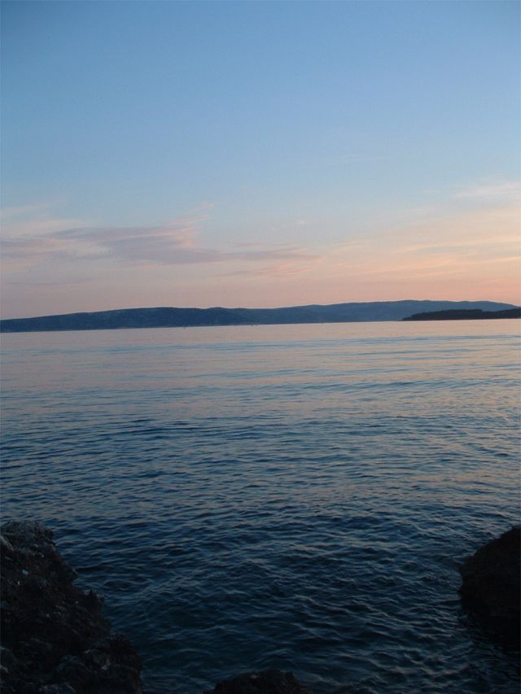 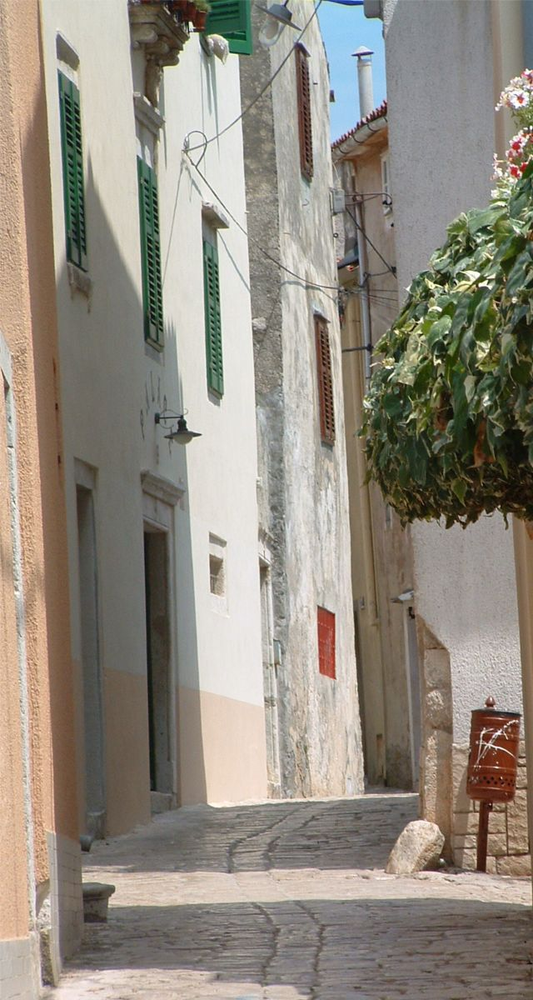 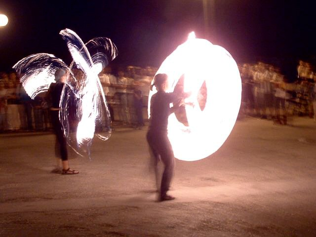 fire tricks in croatia in the town at night. 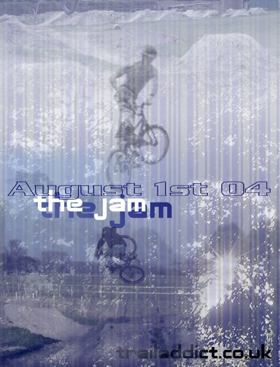 chad is having a jam on the first of august. i think i will go but i might be getting there a bit late. click on the link for directions and stuff. dirt jam info. it's near polegate which is east sussex, brighton, hastings way ish. here are some pictures from the trails. below, you can just about see the shady wooden run in. the trails go around the corner i think, there are a lot of jumps there. prizes from dirty habit i think. 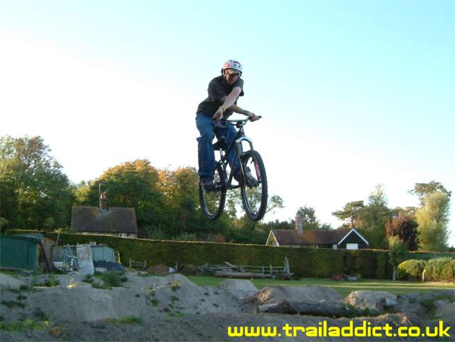 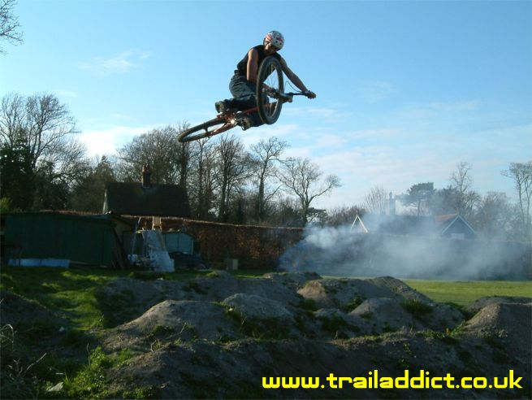 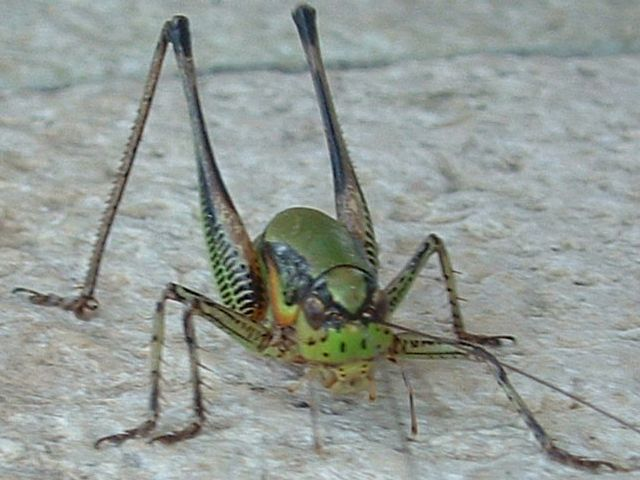 croatian bug - these things are the size of your head and this one jumped on Ben's. makes a good meal though. yum yumm. 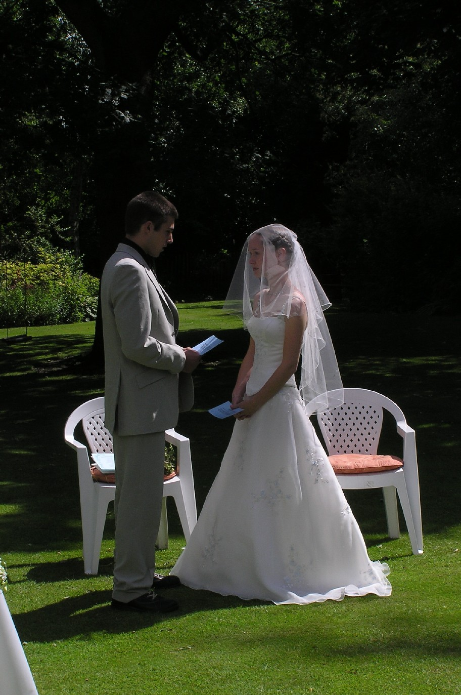 well yak has done his so long and thanks for the summer see you in a month kids update. know what i mean? and it's time for me to do a similar one. thisisnotaskateboard is taking a bit of a break while i go on holiday. there has been talk of guestbook and news deletion, and a new name. who knows. i guess we'll see in a couple of weeks when i return, married. happy birthday to me. 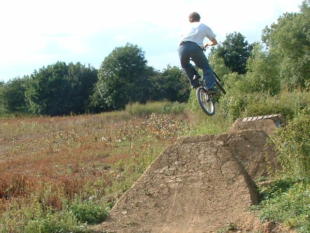 a word of advice: don't ride next to me, or behind me, or infront of me probably. there were two crashes yesterday. one, i tried a little manual and accidently let go of the bars knocking me and tim off our bikes and into the road. then we went to try the new line at orange which was fun only i let the bars slip out of my hands again. i don't think there's much chance me learning no handers for a while, i need to concentrate on holding the bars at the moment. 050704: 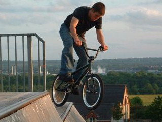 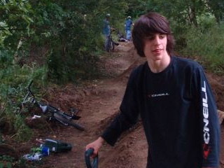 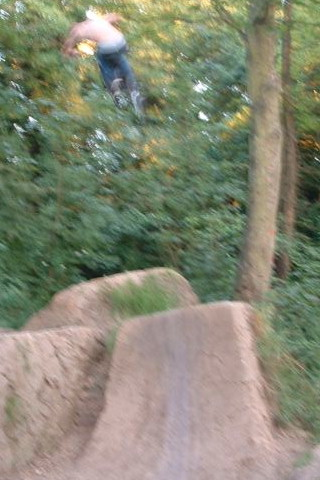 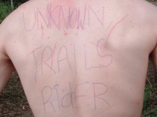 jon robinson at epsom. high init. unknown is a hard word to spell init seb. beckys very clear photo at burham. |